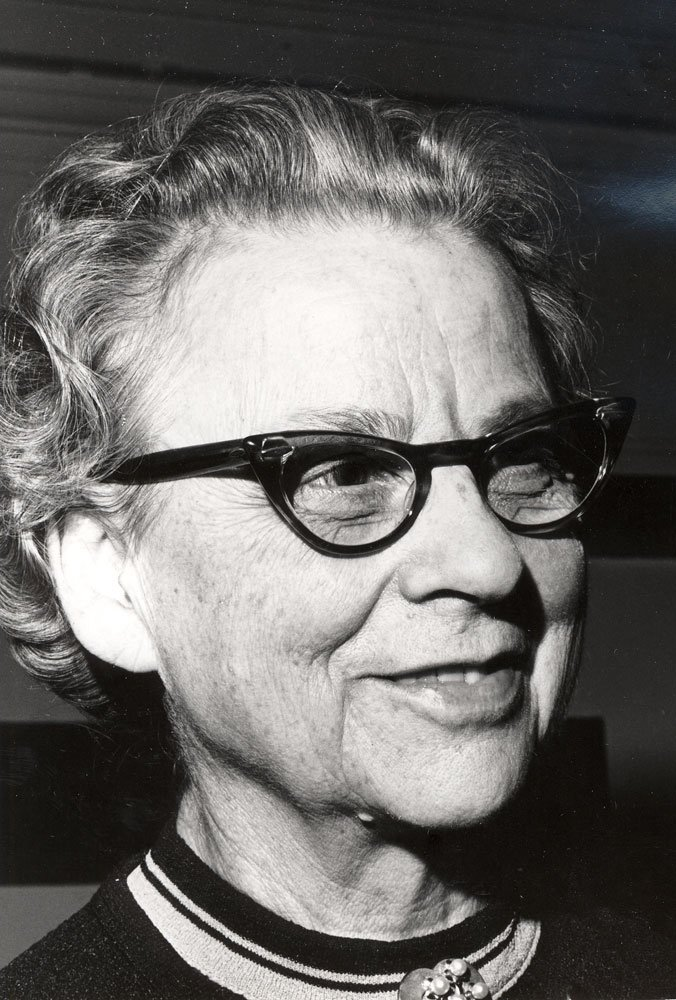

Geschichte
Die Geschichte des Fairen Handels beginnt mit einer Reise: Gemeinsam mit ihrem Mann besucht die Amerikanerin Edna Ruth Byler 1946 Puerto Rico. Sie lernt dort Handarbeiterinnen kennen, die in sehr armen Verhältnissen ihre Waren produzieren. Byler beschließt, einen Markt für diese Handarbeiten zu schaffen, der für eine faire Bezahlung der Arbeiterinnen sorgen soll.
Aus dem Kofferraum ihres Autos heraus verkauft sie Waren aus Südamerika zunächst an ihre Familie und Freundinnen. Die Idee kommt an, und aus Bylers Graswurzelbewegung entsteht "Selfhelp Crafts", eine Organisation des fairen Handels. Sie existiert unter dem Namen "Ten Thousand Villages" bis heute.
"Selfhelp Crafts" war eine Organisation des "Mennonite Central Committee", und auch Edna Ruth Byler gehörte zu den Mennoniten, einer evangelischen Freikirche. So wie in den USA hat die Idee des fairen Handels auch in Deutschland einen kirchlichen Ursprung: 1970 demonstrieren kirchliche Jugendverbände mit Hungermärschen gegen die damalige deutsche Entwicklungspolitik.
Aus diesem Protest entwickelt sich 1971 die "Aktion Dritte Welt Handel" und 1975 Gepa (Gesellschaft zur Förderung der Partnerschaft mit der Dritten Welt). Gesellschafter von Gepa sind der Kirchliche Entwicklungsdienst (KED), Misereor und die neu gegründete Arbeitsgemeinschaft der Dritte Weltläden. Europäische Vorbilder für diese Fairtrade-Organisation haben sich zuvor bereits in England (Oxfam Trading) und in den Niederlanden (S.O.S. Wereldhandel) gegründet. Zu dieser Zeit entstehen auch die ersten Weltläden – Geschäfte, die fair gehandelte Produkte anbieten. Heute gibt es in Deutschland etwa 800 Weltläden.